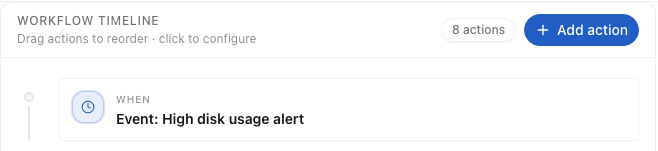
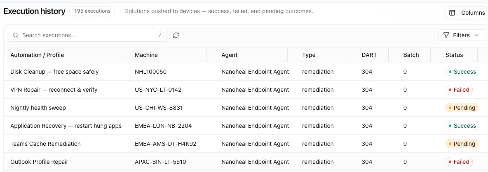

Home / Platform / Automate Issues
02 — Automate Issues
Remediation is a software project. It shouldn’t be.
Specify, script, test, approve, publish — then maintain it forever as the estate drifts. That cost is why automation coverage stops at the top call drivers everywhere else — and why the routine work of running an estate never gets automated at all.
The issue
The economics decide what gets automated — not the need.
What normally happens
Weeks of engineering per fix.
A ticket pattern is identified. An engineer writes a script. It's tested against a handful of builds, security-reviewed, approved, packaged and published. Weeks later, one issue is covered — and the clock starts on maintaining it.
What Nanoheal does
Knowledge, validated once.
The fix is described in plain language and compiled into sealed knowledge. No code is written or generated, so there is nothing to security-review line by line, and nothing that breaks when a build changes underneath it.

01 — Detection
The operating system already told you. Everything else asks again.
A script cannot know a service died unless something checks. So it stays resident and polls — spending CPU, memory and battery on machines that are fine, to catch the small fraction that aren't.
Nanoheal takes the signal the OS emits anyway: the event log entry, the service state change, the crash, the error dialog the user is looking at. The symptom is the trigger. There is nothing to schedule and nothing left running in the background, which is why the endpoint footprint doesn't grow as coverage does.
02 — Execution
The engine already knows how. Intelligence only has to choose.
Device operations are exposed as a governed capability API. The knowledge layer describes what to do; the engine owns how.
Because the capability set is fixed and signed, the variable part of an automation is just its parameters. That is why a new fix is kilobytes of knowledge rather than a codebase, and why pushing a thousand of them doesn't bloat the agent.
03 — Scope
Three classes of work. One engine.
Healing a device and running a device are the same primitive operations against files, registry, services and configuration. Nanoheal does not separate them into different products, because the engine does not distinguish between them.
Resolve.
Remediation triggered by the symptom the OS reports, or by a forecast before the symptom arrives.
Run.
Software distribution, patch management and routine IT tasks — the day-to-day operation of the estate. IT operations →
Enforce.
Device compliance policy, with drift treated as a symptom that triggers its own correction rather than a line in a report.
04 — Delivery
One fix, three ways to deliver it.
The same validated knowledge serves all three paths. You don't rebuild it per channel.
Autoheal.
It resolves before anyone notices. No ticket, no contact, no employee interruption — this is the 17% in production at a Fortune 100 manufacturer.
Self Help.
The employee is offered the fix at the moment of failure and applies it themselves. Deflection without the service desk touching it.
Remote Execution.
The service desk runs the same capability against a device, a group or a whole site in a single action — no runbook to follow, no elevation risk.
05 — Day one
1,200+ configurations, before you build anything.
Remediations, IT tasks and policy compliance, matched against your existing top call drivers on the first day — not an empty canvas.
Worth a direct comparison: the closest published figure in the category is roughly 220 automations alongside 1,300 sensors. Sensors measure. Configurations act. The gap between those two numbers is the gap this page is about. See what ships on day one →
06 — Change control
Autonomy the change board can sign.
The objection to unattended action is never the technology. It is the question of who authorised it, against which population, and how it is reversed. That is answered by structure, not by assurances.
| Step | What happens | What is recorded |
|---|---|---|
| Author | The workflow is written and validated once | Author, version, capability set, action risk per step |
| Link scope | It is attached to a device classification — a site, a persona, a business unit | Which populations, linked by whom |
| Stage | The link becomes a pending change, not a live one | Change count per group, base version, last modified by |
| Publish | Staged changes are released to the estate together | Publish event, group, operator, time |
| Execute | The engine runs it when the trigger fires | Per-device outcome — success, failed, pending |
Nothing goes live because someone edited a profile. Linking an automation to a group stages a change; a separate publish step releases it. That gap is deliberate: it is where review, batching and a change window fit, and it is why the estate does not move under you while an operator is still thinking.
Every step also carries an action-risk classification, so the difference between clearing a cache and touching a service is visible at authoring time rather than discovered at run time.
Unattended does not mean unaccounted for. Every execution resolves to an approved version, a scoped population and a named operator.

See a symptom resolve itself.
Bring us your top three call drivers. We'll show you the same three resolving on a live endpoint — with no script written, and nothing left running to watch for them